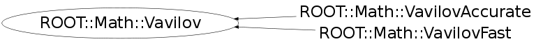

class ROOT::Math::Vavilov
Base class describing a Vavilov distribution
The Vavilov distribution is defined in
P.V. Vavilov: Ionization losses of high-energy heavy particles,
Sov. Phys. JETP 5 (1957) 749 [Zh. Eksp. Teor. Fiz. 32 (1957) 920].
The probability density function of the Vavilov distribution
as function of Landau's parameter is given by:
\f[ p(\lambda_L; \kappa, \beta^2) =
\frac{1}{2 \pi i}\int_{c-i\infty}^{c+i\infty} \phi(s) e^{\lambda_L s} ds\f]
where \f$\phi(s) = e^{C} e^{\psi(s)}\f$
with \f$ C = \kappa (1+\beta^2 \gamma )\f$
and \f$\psi(s)= s \ln \kappa + (s+\beta^2 \kappa)
\cdot \left ( \int \limits_{0}^{1}
\frac{1 - e^{\frac{-st}{\kappa}}}{t} \,d t- \gamma \right )
- \kappa \, e^{\frac{-s}{\kappa}}\f$.
\f$ \gamma = 0.5772156649\dots\f$ is Euler's constant.
For the class Vavilov,
Pdf returns the Vavilov distribution as function of Landau's parameter
\f$\lambda_L = \lambda_V/\kappa - \ln \kappa\f$,
which is the convention used in the CERNLIB routines, and in the tables
by S.M. Seltzer and M.J. Berger: Energy loss stragglin of protons and mesons:
Tabulation of the Vavilov distribution, pp 187-203
in: National Research Council (U.S.), Committee on Nuclear Science:
Studies in penetration of charged particles in matter,
Nat. Akad. Sci. Publication 1133,
Nucl. Sci. Series Report No. 39,
Washington (Nat. Akad. Sci.) 1964, 388 pp.
Available from
<A HREF="http://books.google.de/books?id=kmMrAAAAYAAJ&lpg=PP9&pg=PA187#v=onepage&q&f=false">Google books</A>
Therefore, for small values of \f$\kappa < 0.01\f$,
pdf approaches the Landau distribution.
For values \f$\kappa > 10\f$, the Gauss approximation should be used
with \f$\mu\f$ and \f$\sigma\f$ given by Vavilov::Mean(kappa, beta2)
and sqrt(Vavilov::Variance(kappa, beta2).
The original Vavilov pdf is obtained by
v.Pdf(lambdaV/kappa-log(kappa))/kappa.
Two subclasses are provided:
- VavilovFast uses the algorithm by
A. Rotondi and P. Montagna, Fast calculation of Vavilov distribution,
<A HREF="http://dx.doi.org/10.1016/0168-583X(90)90749-K">Nucl. Instr. and Meth. B47 (1990) 215-224</A>,
which has been implemented in
<A HREF="http://wwwasdoc.web.cern.ch/wwwasdoc/shortwrupsdir/g115/top.html">
CERNLIB (G115)</A>.
- VavilovAccurate uses the algorithm by
B. Schorr, Programs for the Landau and the Vavilov distributions and the corresponding random numbers,
<A HREF="http://dx.doi.org/10.1016/0010-4655(74)90091-5">Computer Phys. Comm. 7 (1974) 215-224</A>,
which has been implemented in
<A HREF="http://wwwasdoc.web.cern.ch/wwwasdoc/shortwrupsdir/g116/top.html">
CERNLIB (G116)</A>.
Both subclasses store coefficients needed to calculate \f$p(\lambda; \kappa, \beta^2)\f$
for fixed values of \f$\kappa\f$ and \f$\beta^2\f$.
Changing these values is computationally expensive.
VavilovFast is about 5 times faster for the calculation of the Pdf than VavilovAccurate;
initialization takes about 100 times longer than calculation of the Pdf value.
For the quantile calculation, VavilovFast
is 30 times faster for the initialization, and 6 times faster for
subsequent calculations. Initialization for Quantile takes
27 (11) times longer than subsequent calls for VavilovFast (VavilovAccurate).
@ingroup StatFunc
Function Members (Methods)
This is an abstract class, constructors will not be documented.
Look at the header to check for available constructors.
public:
| virtual | ~Vavilov() |
| virtual double | Cdf(double x) const |
| virtual double | Cdf(double x, double kappa, double beta2) |
| virtual double | Cdf_c(double x) const |
| virtual double | Cdf_c(double x, double kappa, double beta2) |
| virtual double | GetBeta2() const |
| virtual double | GetKappa() const |
| virtual double | GetLambdaMax() const |
| virtual double | GetLambdaMin() const |
| virtual double | Kurtosis() const |
| static double | Kurtosis(double kappa, double beta2) |
| virtual double | Mean() const |
| static double | Mean(double kappa, double beta2) |
| virtual double | Mode() const |
| virtual double | Mode(double kappa, double beta2) |
| ROOT::Math::Vavilov& | operator=(const ROOT::Math::Vavilov&) |
| virtual double | Pdf(double x) const |
| virtual double | Pdf(double x, double kappa, double beta2) |
| virtual double | Quantile(double z) const |
| virtual double | Quantile(double z, double kappa, double beta2) |
| virtual double | Quantile_c(double z) const |
| virtual double | Quantile_c(double z, double kappa, double beta2) |
| virtual void | SetKappaBeta2(double kappa, double beta2) |
| virtual double | Skewness() const |
| static double | Skewness(double kappa, double beta2) |
| virtual double | Variance() const |
| static double | Variance(double kappa, double beta2) |
Class Charts
{kind=link}
{kind=link}
{kind=link}
{kind=link}

Function documentation
double Pdf(double x) const
Evaluate the Vavilov probability density function
@param x The Landau parameter \f$x = \lambda_L\f$
double Pdf(double x, double kappa, double beta2)
Evaluate the Vavilov probability density function,
and set kappa and beta2, if necessary
@param x The Landau parameter \f$x = \lambda_L\f$
@param kappa The parameter \f$\kappa\f$, which should be in the range \f$0.01 \le \kappa \le 10 \f$
@param beta2 The parameter \f$\beta^2\f$, which must be in the range \f$0 \le \beta^2 \le 1 \f$
double Cdf(double x) const
Evaluate the Vavilov cummulative probability density function
@param x The Landau parameter \f$x = \lambda_L\f$
double Cdf(double x, double kappa, double beta2)
Evaluate the Vavilov cummulative probability density function,
and set kappa and beta2, if necessary
@param x The Landau parameter \f$x = \lambda_L\f$
@param kappa The parameter \f$\kappa\f$, which should be in the range \f$0.01 \le \kappa \le 10 \f$
@param beta2 The parameter \f$\beta^2\f$, which must be in the range \f$0 \le \beta^2 \le 1 \f$
double Cdf_c(double x) const
Evaluate the Vavilov complementary cummulative probability density function
@param x The Landau parameter \f$x = \lambda_L\f$
double Cdf_c(double x, double kappa, double beta2)
Evaluate the Vavilov complementary cummulative probability density function,
and set kappa and beta2, if necessary
@param x The Landau parameter \f$x = \lambda_L\f$
@param kappa The parameter \f$\kappa\f$, which should be in the range \f$0.01 \le \kappa \le 10 \f$
@param beta2 The parameter \f$\beta^2\f$, which must be in the range \f$0 \le \beta^2 \le 1 \f$
double Quantile(double z) const
Evaluate the inverse of the Vavilov cummulative probability density function
@param z The argument \f$z\f$, which must be in the range \f$0 \le z \le 1\f$
double Quantile(double z, double kappa, double beta2)
Evaluate the inverse of the Vavilov cummulative probability density function,
and set kappa and beta2, if necessary
@param z The argument \f$z\f$, which must be in the range \f$0 \le z \le 1\f$
@param kappa The parameter \f$\kappa\f$, which should be in the range \f$0.01 \le \kappa \le 10 \f$
@param beta2 The parameter \f$\beta^2\f$, which must be in the range \f$0 \le \beta^2 \le 1 \f$
double Quantile_c(double z) const
Evaluate the inverse of the complementary Vavilov cummulative probability density function
@param z The argument \f$z\f$, which must be in the range \f$0 \le z \le 1\f$
double Quantile_c(double z, double kappa, double beta2)
Evaluate the inverse of the complementary Vavilov cummulative probability density function,
and set kappa and beta2, if necessary
@param z The argument \f$z\f$, which must be in the range \f$0 \le z \le 1\f$
@param kappa The parameter \f$\kappa\f$, which should be in the range \f$0.01 \le \kappa \le 10 \f$
@param beta2 The parameter \f$\beta^2\f$, which must be in the range \f$0 \le \beta^2 \le 1 \f$
void SetKappaBeta2(double kappa, double beta2)
Change \f$\kappa\f$ and \f$\beta^2\f$ and recalculate coefficients if necessary
@param kappa The parameter \f$\kappa\f$, which should be in the range \f$0.01 \le \kappa \le 10 \f$
@param beta2 The parameter \f$\beta^2\f$, which must be in the range \f$0 \le \beta^2 \le 1 \f$
double GetLambdaMin() const
Return the minimum value of \f$\lambda\f$ for which \f$p(\lambda; \kappa, \beta^2)\f$
is nonzero in the current approximation
double GetLambdaMax() const
Return the maximum value of \f$\lambda\f$ for which \f$p(\lambda; \kappa, \beta^2)\f$
is nonzero in the current approximation
double Mode(double kappa, double beta2)
Return the value of \f$\lambda\f$ where the pdf is maximal function,
and set kappa and beta2, if necessary
@param kappa The parameter \f$\kappa\f$, which should be in the range \f$0.01 \le \kappa \le 10 \f$
@param beta2 The parameter \f$\beta^2\f$, which must be in the range \f$0 \le \beta^2 \le 1 \f$
double Mean() const
Return the theoretical mean \f$\mu = \gamma-1- \ln \kappa - \beta^2\f$,
where \f$\gamma = 0.5772\dots\f$ is Euler's constant
double Variance() const
Return the theoretical variance \f$\sigma^2 = \frac{1 - \beta^2/2}{\kappa}\f$
double Skewness() const
Return the theoretical skewness
\f$\gamma_1 = \frac{1/2 - \beta^2/3}{\kappa^2 \sigma^3} \f$
double Kurtosis() const
Return the theoretical kurtosis
\f$\gamma_2 = \frac{1/3 - \beta^2/4}{\kappa^3 \sigma^4}\f$
double Mean(double kappa, double beta2)
Return the theoretical Mean \f$\mu = \gamma-1- \ln \kappa - \beta^2\f$
@param kappa The parameter \f$\kappa\f$, which should be in the range \f$0.01 \le \kappa \le 10 \f$
@param beta2 The parameter \f$\beta^2\f$, which must be in the range \f$0 \le \beta^2 \le 1 \f$
double Variance(double kappa, double beta2)
Return the theoretical Variance \f$\sigma^2 = \frac{1 - \beta^2/2}{\kappa}\f$
@param kappa The parameter \f$\kappa\f$, which should be in the range \f$0.01 \le \kappa \le 10 \f$
@param beta2 The parameter \f$\beta^2\f$, which must be in the range \f$0 \le \beta^2 \le 1 \f$
double Skewness(double kappa, double beta2)
Return the theoretical skewness
\f$\gamma_1 = \frac{1/2 - \beta^2/3}{\kappa^2 \sigma^3} \f$
@param kappa The parameter \f$\kappa\f$, which should be in the range \f$0.01 \le \kappa \le 10 \f$
@param beta2 The parameter \f$\beta^2\f$, which must be in the range \f$0 \le \beta^2 \le 1 \f$
double Kurtosis(double kappa, double beta2)
Return the theoretical kurtosis
\f$\gamma_2 = \frac{1/3 - \beta^2/4}{\kappa^3 \sigma^4}\f$
@param kappa The parameter \f$\kappa\f$, which should be in the range \f$0.01 \le \kappa \le 10 \f$
@param beta2 The parameter \f$\beta^2\f$, which must be in the range \f$0 \le \beta^2 \le 1 \f$